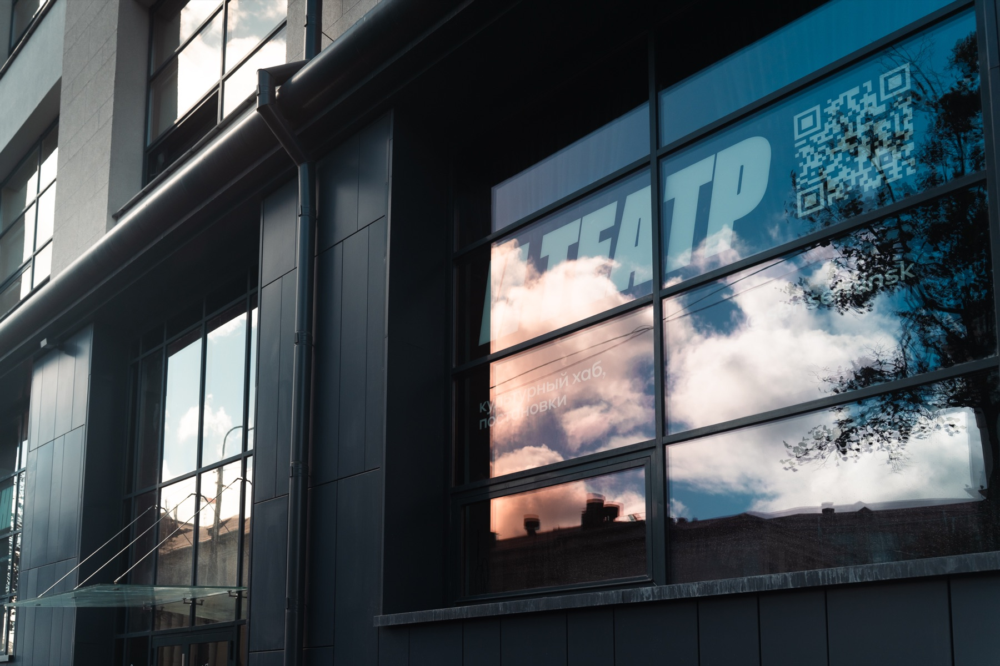

373 м² · Кульман 1/2
Пространство
Трансформируемая сцена, мобильная посадка, лаунж, гримёрка и барная зона. Один зал — много сценариев.
01221,1 м²
Сцена и зрительный зал
02До 100 мест
В зависимости от конфигурации
03Центр Минска
Кульман 1/2



Хотите увидеть всё вживую?